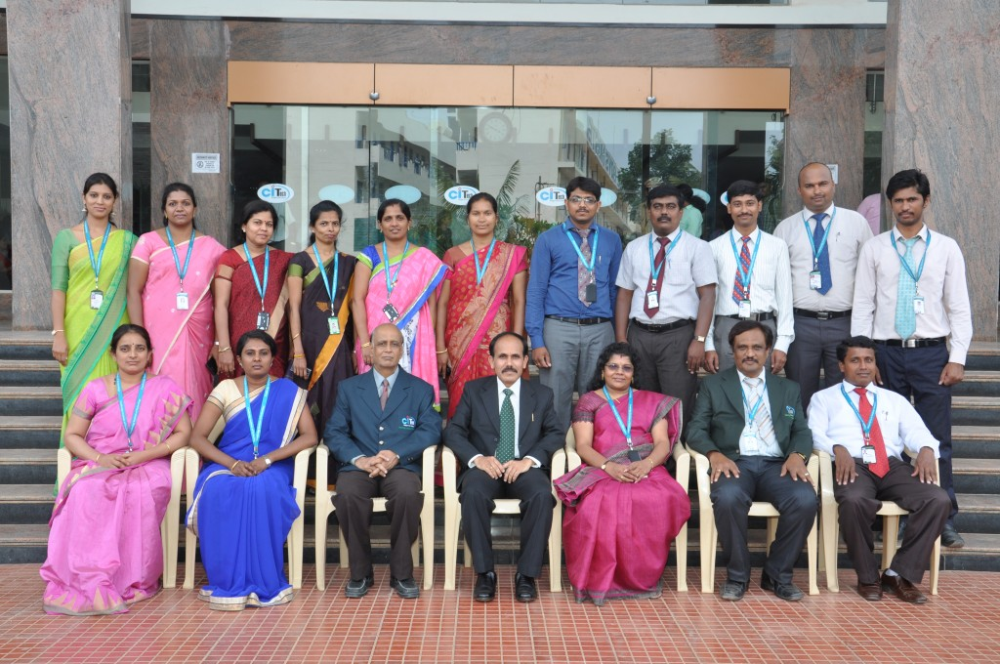

VISION
To effectively disseminate fundamental knowledge about Physics, Chemistry and Mathematics and build a strong research and teaching environment that responds swiftly to the challenges of the 21st century. We support an atmosphere of trust where communication and teamwork cultivate a rich environment for teaching and learning.
MISSION
The Dept. of Basic Sciences strives to provide a strong foundation in the elements of scientific methods that encourages students to acquire an in-depth appreciation of the scientific endeavor. We equip students to contribute to society as responsible, ethical practitioners of their profession, as socially conscientious citizens, and as leaders in the commitment to lifelong learning.